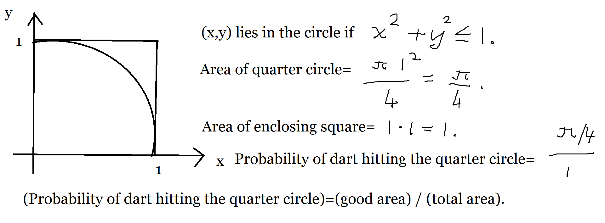
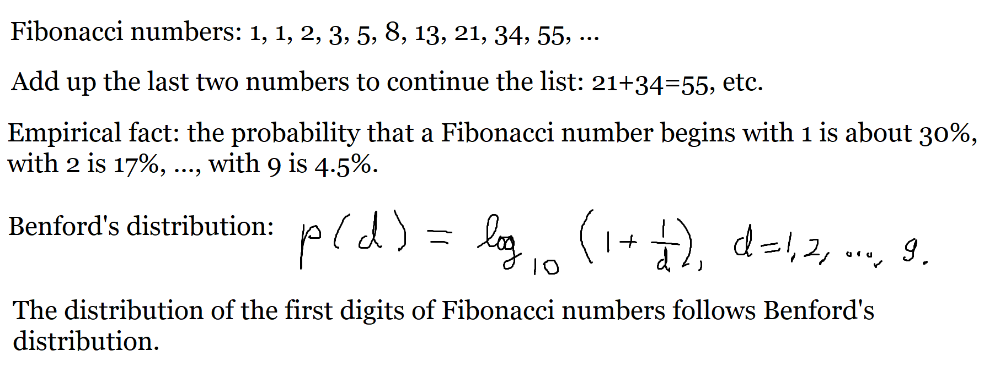

In this set of notes we work through some notions and examples from statistics. You can read the questions here, study the written or handwritten notes, and while doing so, listen to some explanations by clicking on the "play" button.
Lesson 1, Introduction to the Practice of Statistics.
Lies, damned lies, statistics, machine learning, artificial intelligence. Statistics is a field of human endeavor that aims to answer numerical type of questions when we do not know how to compute the answer, or we are even unsure if there is a precise answer.
Suppose a teacher has sheaf of, say, 30 or more exams with only the standard type of multiple choice questions (usually with answers A, B, C, D, E on a bubble sheet). Suppose he forgot what the right answers are. How can he grade the exams still? He may not succeed fully accurately, but he can come pretty close without knowing anything, or not much at any rate. He could remember the name of the class Einstein, and just assume that his bubbles are the right ones, and use his answers as the grading key. Another way is to count how many times each answer was chosen for each question, and just take the most popular answer to be the correct one for each question. If there is a tie for the most popular answer, just take a random choice (e.g., cast a die until it tells you which of the at most 5 ties to pick; a die has 6 sides). This method usually gets pretty close to the truth even when there is no class Einstein and the exam average is about 50%.
This is how statistics works, there is a power in the majority or mass phenomena. Statistics tries to make use of the bulk or average of mass information.
You can collect data on any question and play statistics with it. Suppose we want to answer the deep question that often keeps thinking men up at night: Does Santa Claus tuck his beard under the blanket or leave it outside?
We do not know how to compute an answer to this yes or no question. We may not even be sure if there is a real answer to it, but nothing prevents us from collecting data on it. We can sneak this in as a question into votes on congressional appropriations, advertise it on TV, force people to answer it if they want to use any cell phone app, etc. Once we collected data about the question (and possibly about the respondents; surveys always want to know a lot about you), then we can play games with the data such as computing some numbers (called statistics) such as averages, averages of deviations, we can fit curves such as a regression line, etc. Will we know the answer about the beard of Santa Claus after all the games, bells, and whistles? Probably not, but we will have some data on what a selection of people (called a sample) elected to tell us (or lie to us) and we may be able to use that to "infer" what opinion all thinking men (called the population) are likely to hold on the matter (51% for, 49% against; or some such outcome).
A statistical analysis begins with one or more questions to try to answer. Then we collect data on them from clinical trials, from surveys of people, from automated sensors in machines, on street corners, in computers, in cell phones, and modern toasters. Once we have spent the money allocated for the collection of the data, we have to try to think how to use the data to bear upon the questions we initially posed. We compute some numbers, plot some charts, do a song and dance, scratch our chins, and declare that the answer is … significant at some level or lies in an interval with a high level of confidence.
Statistics aims to automate some of the above process for some standard kinds of questions, e.g., is the average of the first column of random numbers different from the average of the second column of random numbers?
There are a few things that complicate a statistical calculation: randomness, too little data, too much data, partially missing data, incorrect data, inadequacy of the statistical model, the too heavy burden of actually calculating an answer (e.g., a mean as a 100-dimensional integral).
There is some mathematics behind statistical calculations, such as the theory of probability, linear algebra, optimization (say, gradient descent), solution of nonlinear equations, and approximate calculations of large sums and integrals.
We will see very little of any of these in this course, but please be aware that there is more to statistics than will meet the eye in this course.
We can measure the value of some variable for a long period of time and we may be able to deduce some statistical facts about the world. For example, we can measure the temperature at noon for ten years in one spot and deduce that the monthly mean temperature seems to repeat more or less in the same way every year. If we have a few centuries' worth of such data, then we might be able to spot some trends in the monthly mean temperature beyond the seasonal repetitions such as annual mean temperature going up or down with the passage of the time. We will not know what if anything causes the change, but with enough of data and with some knowledge to process it, we can discover valuable trends.
Much of the currently fashionable machine learning works with statistical learning from large amounts of data; trying to fit a multivariable function \(y=f(x)\) to a large point cloud of \(x\)-values and collected answers \(y\). The function \(f\) itself is usually found in the form \(f(x)=f(x,\vartheta)\) where \(\vartheta\) is a single parameter or usually many parameters that we try to estimate using the data.
Remember a statistician never computes anything, not even \(2+3\), he only estimates stuff and states how confident he is in his estimate (e.g., a \(p\)-value).
You can do surprising things with this approach of function fitting or machine learning as shown by the "tech" world, e.g., recognition of numbers handwritten on envelopes of mail or on checks (cheques).
Statistics can be used in quality control of industrial production, e.g., how big a proportion of a production lot (of screws or light bulbs) do we need to check in order to be safe from law suits or be able to maintain, say, a 99.9% error free rate.
Statistics can be used in war, e.g., how many bombs per acre do we need to drop
in order to carpet bomb a target with prescribed destruction rate.
Statistics can be used in automatic targeting the enemy by autonomous weapons:
isEnemy(x)=hasBeard(x)*isOver16(x)*carriesSuspiciousItem(x).
Statistics can be used in advertising, e.g., which ad do we need to show to which people how many times in order to maximize the profit?
Statistics can be used in social sciences to bolster up surveys of people’s opinions with numerical fairy dust.
Statistics can be used in finance, to mitigate risk, to increase profits.
Statistics can be used in government planning to prepare for future need for hospitals, schools, and warships.
Statistics can be used to analyze language (e.g., letter and word frequencies in general or for the prattle of a single person) and use that knowledge to break cryptographical messages (decipher "QWERTYUIOPASDFGHJKL" as "ATTACK AT DAWN".)
Statistics can used to learn the mass attitudes and reinforce that bias, e.g., in loans and employment against poor or minority or marginalized people. If an applicant applies from a ghetto zip code, he might not be given a loan or a job; machines can throw out your application based on a few numerical criteria. See facial recognition and "my friend is not a gorilla".
Question. Throwing darts at the unit square with uniform distribution, estimate the value of \(\pi\approx 3.14\) by counting the proportion of darts that land in the quarter circle.

We can use the computer to throw a million (1e6) darts or points \((x,y)\)
at the unit square and count the good ones (i.e., that hit within the quarter circle) over the total, i.e., the empirical probability is \(p=\frac{\textrm{#hits}}{\textrm{#darts}}\), which should be "close" to the geometric probability,
\(p_g=\frac{\textrm{good area}}{\textrm{total area}}=\frac{\pi^2/4}{1}=\frac\pi4\).
Hence \(\pi=4p_g\approx4p\).
>> format longg >> x=rand(1e6,1) ; y=rand(1e6,1) ; p=mean(x.^2+y.^2<=1) ; estimate_for_pi=4*p , err=estimate_for_pi-pi estimate_for_pi = 3.142968 err = 0.00137534641020709 >>
We find that \(\pi\approx3.14\). This is one of the simplest examples of Monte Carlo integration.
Question. Count how many of the first decimal digits of the Fibonacci numbers \(f_1=1\), \(f_2=1\), \(f_n=f_{n-1}+f_{n-2}\) for \(n\ge3\), equal to \(1\), \(2\), …, \(9\) in the first \(n\) (or \(n=1000\)) examples, and show that the empirical probability of the first digit of the Fibonacci number being equal to \(d\) is approximately \(\log_{10}(1+1/d)\) for \(d=1,2,\ldots,9\). The latter is Benford’s probability distribution.

>> first_decimal=@(x)num2str(abs(x))(1)-48 ;
>> fibonacci=zeros(1000,1) ;
>> fibonacci(1)=1 ; fibonacci(2)=1 ;
>> for i=3:1000, fibonacci(i)=fibonacci(i-1)+fibonacci(i-2);end
>> f=arrayfun(@(fi)first_decimal(fi),fibonacci) ;
>> fibonacci(1:10)'
ans =
1 1 2 3 5 8 13 21 34 55
>> b=mean(f==1:9)
b =
0.301000 0.177000 0.125000 0.096000 0.080000 0.067000 0.056000 0.053000 0.045000
>> benford=log10(1+1./(1:9))
benford =
0.301030 0.176091 0.124939 0.096910 0.079181 0.066947 0.057992 0.051153 0.045757
>> err=b-benford
err =
Columns 1 through 7:
-0.000029996 0.000908741 0.000061263 -0.000910013 0.000818754 0.000053210 -0.001991947
Columns 8 and 9:
0.001847478 -0.000757491
>>
We can see from the computer counts that the empirical probabilities are pretty close to the ones given by Benford.
OK, enough of the interesting stuff; let us go to the boring vocabulary items.
Statistics is the science of collecting, organizing, summarizing, and analyzing information to draw conclusions or answer questions. In addition, statistics is about providing a measure of confidence in any conclusions.
A variable is a quantity (usually a number describing a continuous or discrete random number) that we want to involve in our statistical analysis. For example, when we study a sample or population of people we often want to know their age (a variable), height (another variable, probably related to the age, if the age is small, i.e., children are usually small), and weight (another variable). We could be also interested in their income (another variable). Their zip code (another variable), their sex (another variable), intelligence quotient (another variable, which we may not even be able to measure or define properly).
A numerical variable can be a ratio variable (or "be measured at the ratio level"). These are the plain vanilla numbers where it makes common sense to multiply the number by, say, 2, 3, etc and expect a reasonable outcome. The height of a person is a ratio variable since it makes sense for one person to be 1.1 times as tall as another. The sex of a person (e.g., 0 for female and 1 for male), is not a ratio variable since there is no sense in trying to multiply it with another number such as 2 or 1.3. Sex of a person is called a nominal variable (or factor) since while often coded as a number, say, 0 or 1, or as a vector, say, (1,0) or (0,1), it does not behave like a usual number, i.e., we cannot do meaningful arithmetic with it.
When a statistician studies a group of people, he often has his eyes on a bigger group. He studies the drop in order to know about the ocean. The drop is his sample and he dreams to know the ocean or the population. Say, a dietician studies 1000 people for the benefits of the potato peels only diet. The 1000 subjects are his sample, and he aims to be able to, say, something not only about the 1000 but, say, all the US population, or people in a particular state, say, NC. His population is, say, the US population or the NC population.
Why do you need to restrict the study and the data collection to a sample (often pretty small)? The answer can be money ($) and lack of willing subjects. You cannot expect to put the entire population on potato peels diet (they will lynch you), but often enough you can find some random people who are willing to do it (for money, pizza, glory, or helping with ma’s research). In some fields nowadays you pretty much can survey the entire population: say goo girl or app pal can know pretty much everything about you without explicitly asking you any questions through your beloved devices.
Numbers that describe the entire population of the statistician’s pet project are called parameters of the population. Say, the average height of all people in the USA can be a parameter. The average height of the statistician’s sample is called a statistic, which is a random variable, since you usually draw the sample at random. The statistician would often want to say something about the parameters of his experiment’s population by computing the similar statistics of his sample. E.g., if we have a big enough and well enough distributed sample, then we expect to say something with confidence about the average height of the population based upon the average height of the sample (and possibly their average weight, and age). Estimation of parameters via statistics is the game of a statistician.
Descriptive statistics is a description of the variables involved, summarizing what they are, what they are meant to describe, how they were collected, how they are analyzed, their numerical summaries, charts, tables and plots. We will compute the mean, min, max, median, standard deviation, kurtosis, etc, of a column of numbers. If we have multiple columns, we may compute correlations, etc. These quantities are usually called (some of) the descriptive statistics. (They are not called deceptive statistics, but sometimes they are, and can be used for deception, e.g., your market share in a grossly tilted 3D pie chart).
The process of going from talking about the sample to talking about the population is called inference and the part of statistics devoted to it is called inferential statistics. We feed a random half of the sample subjects the new magic pill and the other half the placebo pill. We measure some demographics and vitals of the subjects. We play with the data and try to infer that the treatment (giving the new magic pill) is better than giving the placebo pill. We must be able to find something in the data to draw this conclusion or inference from; that is why the pharmaceutical company (the pill’s maker) pays for the trial. Yet, you must draw that conclusion using the accepted rules of the statistical game, you cannot just jump to the conclusion or make it up. It has to do with "scientific integrity" and your reputation. The usual statistical signal is very weak and beset with noise and errors. If the conclusion sticks out a mile or the data stinks to high heaven, then the task of drawing the conclusion is easy, but it is rarely the case that we can find a comfortably strong signal in the data. That is why there are so many ways of analyzing the data. One of them is bound to work to suit your purpose, or at least beat a \(p\)-level of significance.
Back to talking about variables. A discrete variable usually assumes only a few values, e.g., male or female; round, triangular, or square; has 0, …, 10 fingers. A continuous variable assumes a large number (potentially infinite) number of values, e.g., your height in millimeters, the concentration of a drug in your blood stream, etc.
Some variables are naturally numeric, they are called quantitative variables, and some are just made numeric artificially, they are called qualitative variables. E.g., sex male=0, female=1 is qualitative; day of the week Sunday=0, Monday=1, …, Saturday=6 is qualitative; car color silver=1, white=2, red=3, etc, is qualitative. We cannot do usual arithmetic on qualitative variables.
A variable is called nominal (or measured at the nominal level) if its values are just nouns or names (like male, female; red, blue; etc), even if they are coded as numbers.
A variable is called ordinal (or measured at the ordinal level) if its values can be ordered in a useful sequence, e.g., Monday, Tuesday, etc; January, February, etc; gold medal, silver medal, bronze medal, plastic medal at a competition. Usually, the numerical representation of the variable respects the sequence. It is probably useless to code January=1, February=1234, March=-4332, etc, it is better to use January=1, February=2, March=3, etc.
A variable is called an interval variable (or measured at the interval level) if the differences of the values of the variable have a meaning. The days Monday, Tuesday, etc are interval variables, and so are the months January, February, etc. Any interval variable is also an ordinal variable, but the converse is not true in general. E.g., in the gold medal, silver medal, etc example there is no clear cut difference that says that the gold medal winner is a fixed amount better than a silver medal winner or a bronze medal winner. Same thing with the recepients of grades A, B, C, etc, of course grades. There is no telling how much better a B student is above a C or D student.
A variable is called a ratio variable (or measure at the ratio level) if its values can be meaningfully multiplied by numbers such as 2,3, or 1.1. We can also divide two values of the variable and get a pure number. Physical measurements such as height or weigh are ratio variables. Temperature is a ratio variable if it is measured on the absolute scale in Kelvins. Temperature measured in Celsius or Fahrenheit is only an interval variable since, a kilogram of water of 100 degrees F does not have twice the amount of heat in it as a kilogram of water of 50 degrees F, but a kilogram of ice of 100 K has twice the amount of heat as in a kilogram of ice of 50 K.
Sometimes the nature of a variable in the nominal to ratio categories depends on the way we intend to use them in the statistical analysis. In linear regression we usually code ratio variables as single numbers and nonratio variables as vectors (1,0,0), (0,1,0), (0,0,1) with the number of components of the vector equal to the number of levels or distinct values of the nominal variable (e.g., sex as (1,0), (0,1); color gold, silver, bronze as (1,0,0), (0,1,0), (0,0,1)). Statistical software usually takes care of this automatically if we denote the levels of nominal variables using letters or words rather than plain numbers; the data tables collected may still code them as numbers, because numbers are shorter and easier to enter and store.
There are many exercises in the book and in the online homework that depend on parsing the words closely; just mug up the definitions and use common sense. I will try to ask purely computational questions on the exams; no parsing of words and lawyer stuff.